Taradod Nexus · Product Catalog
Taradod Nexus is an operations console for organizations that capture attendance on face / fingerprint devices and need that data clean, live, and reliable in Rahkaran ERP. This catalog shows product surfaces only — delivery and source remain private.
Device health, action-needed alerts, and live entry/exit — built for a control room, not a sales deck.
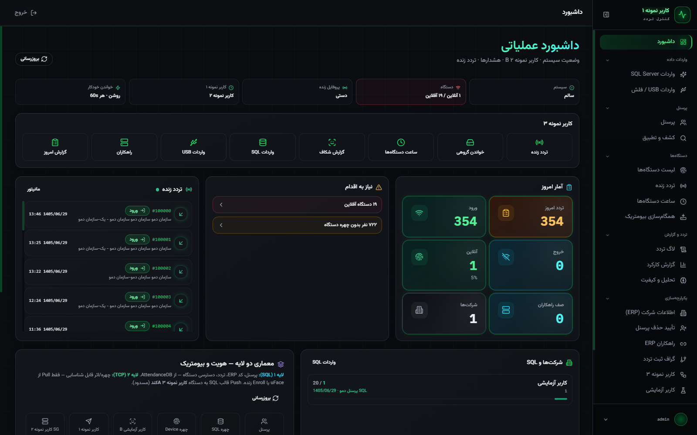
System health cards, today’s stats, and an action queue on one screen.
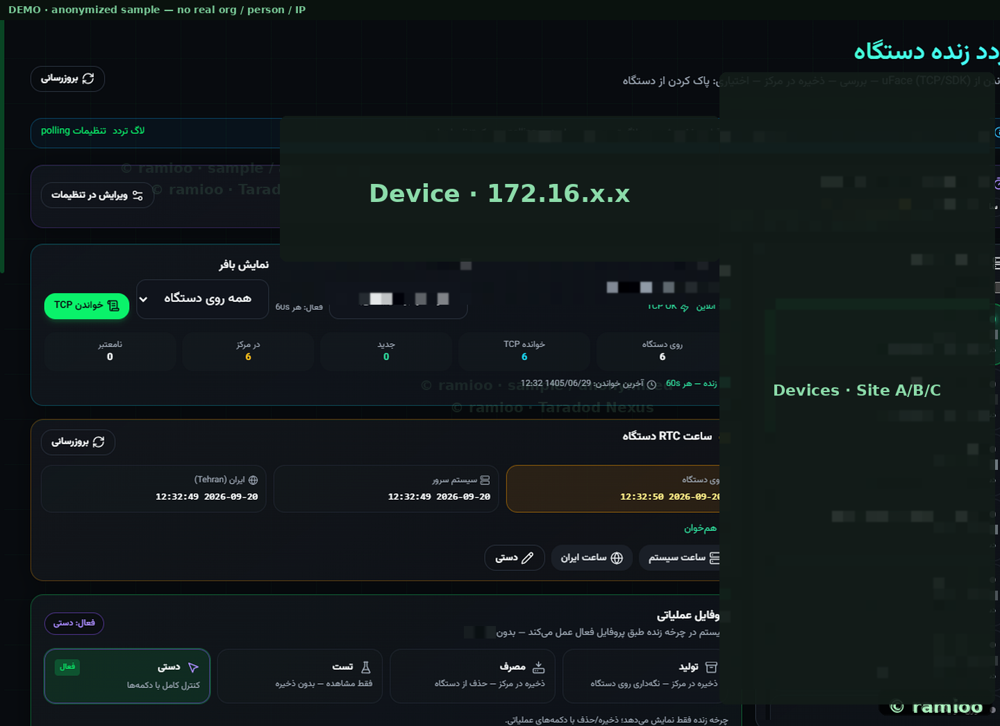
TCP reads from uFace/ZK devices, buffering before final commit, and device RTC clock sync.
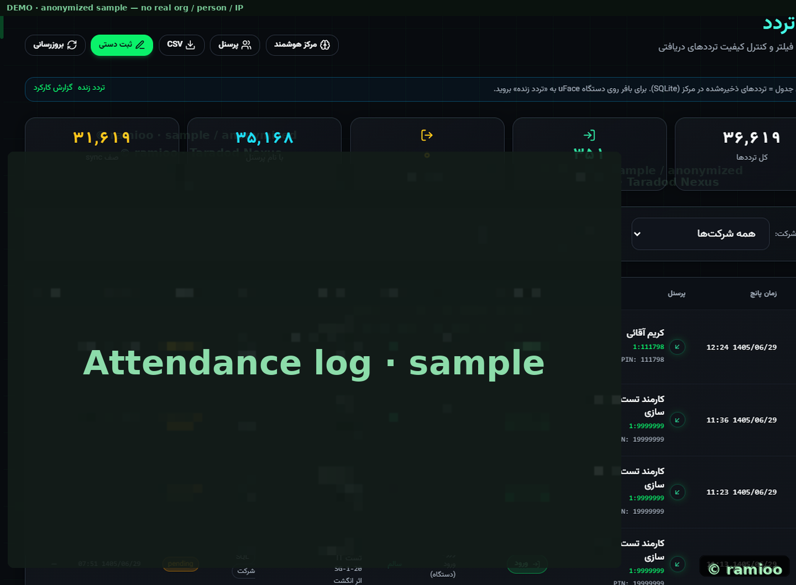
Searchable attendance history with quality and sync status.
Match people across device, local store, and ERP — without spreadsheet ops at enterprise scale.
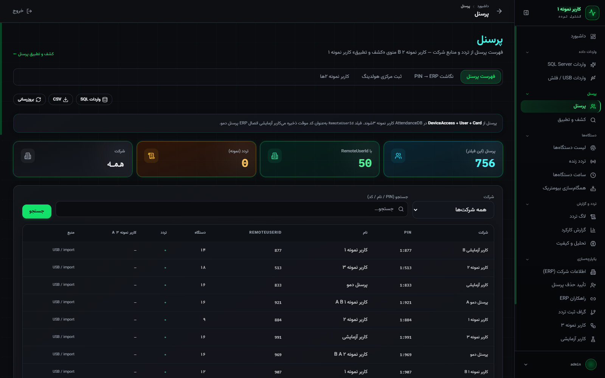
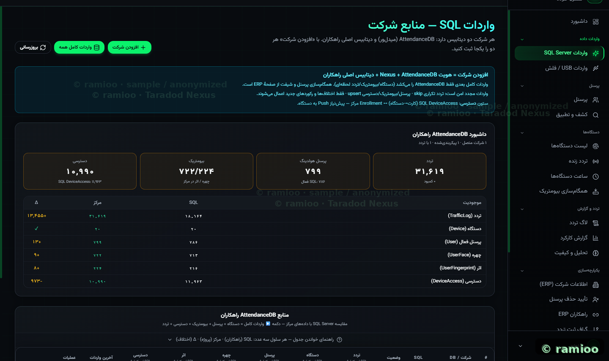
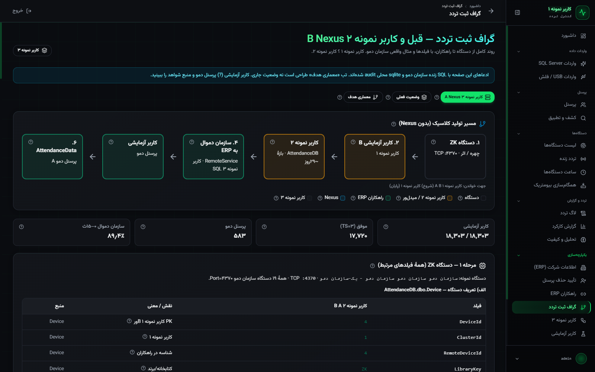
Multi-site device inventory, online/offline state, and biometric template synchronization.
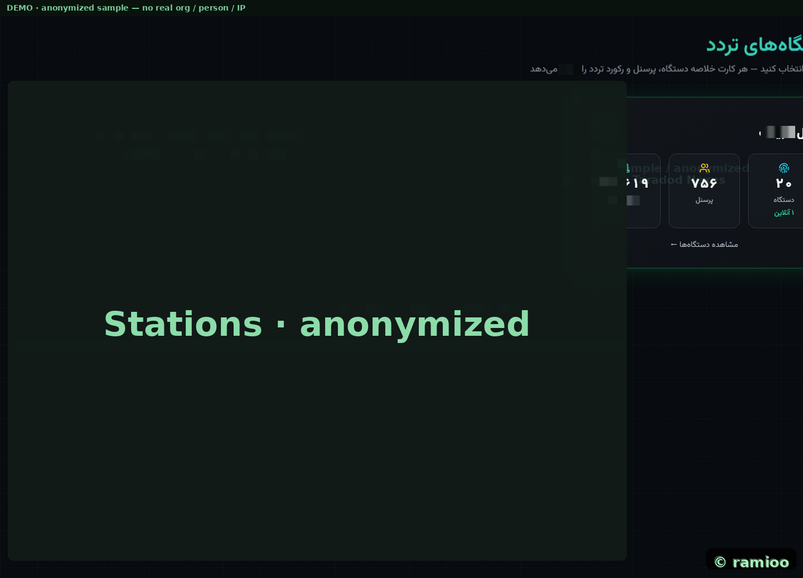
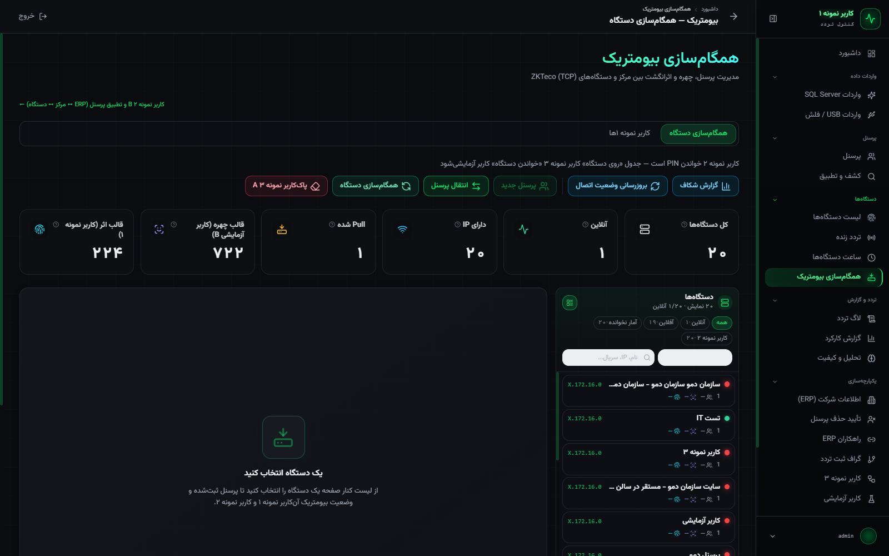
SQL layer for personnel/ERP and TCP layer for live recognition — a clear path for auditability.
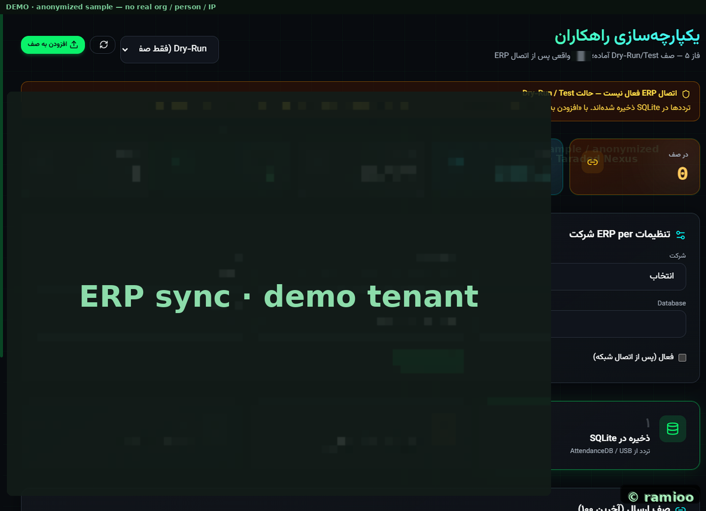
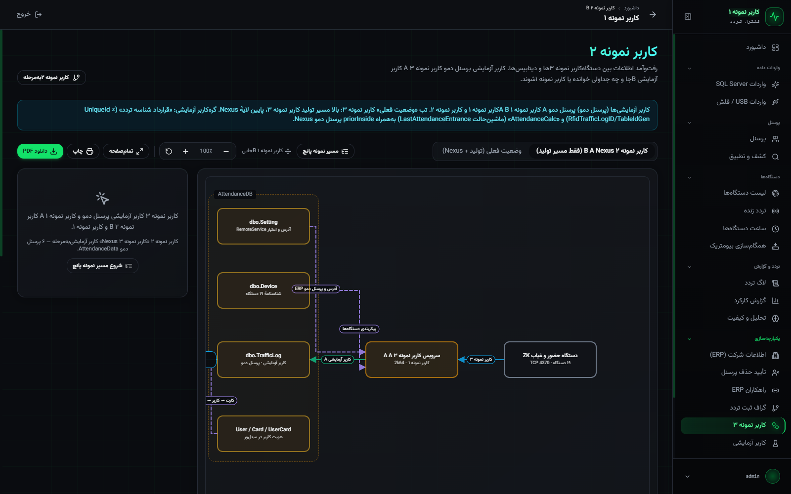
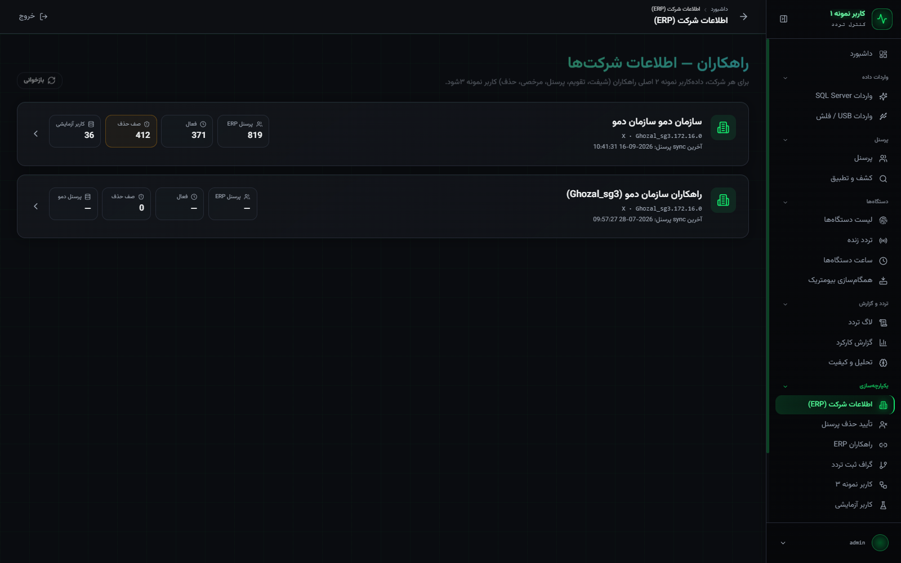
Performance reports, data gaps, and admin access control.
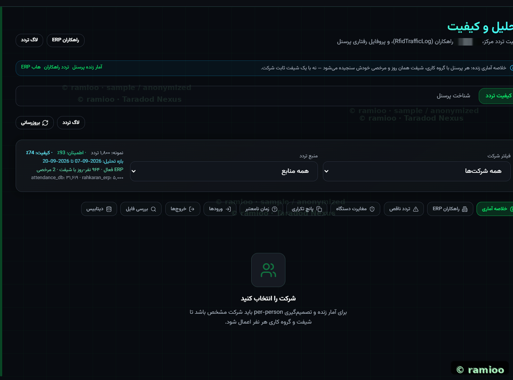
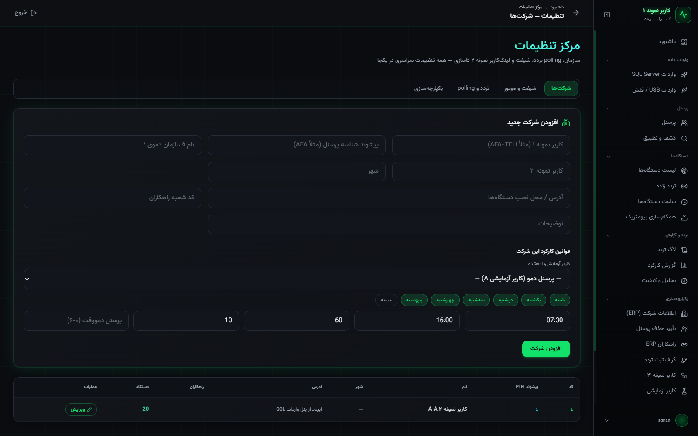
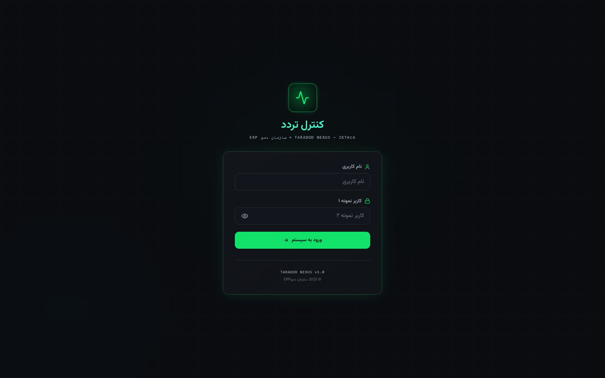